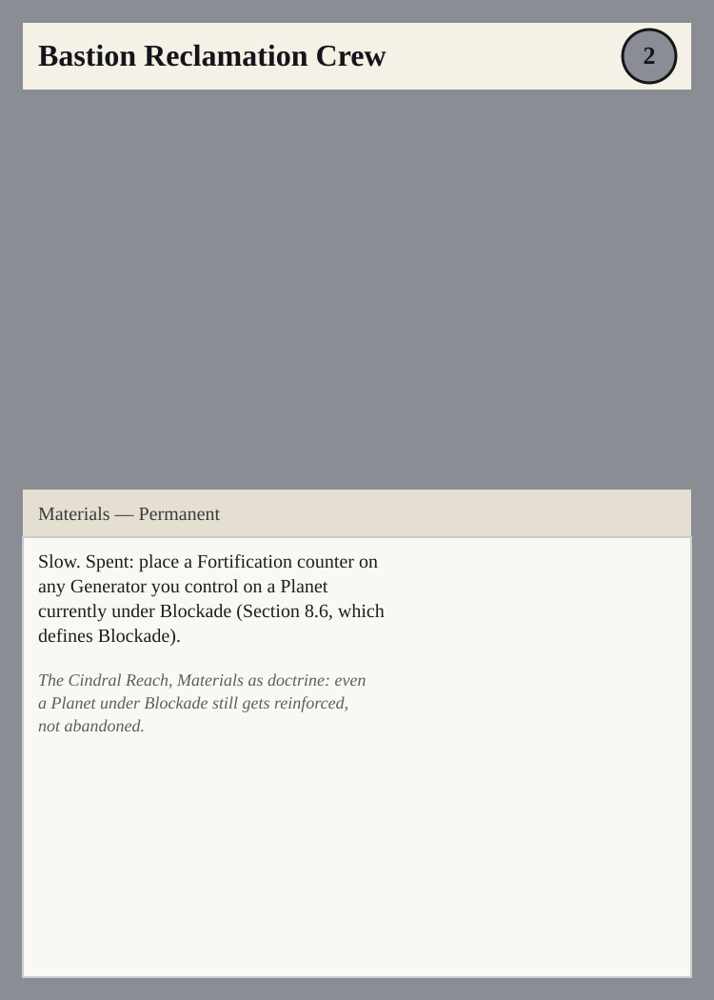
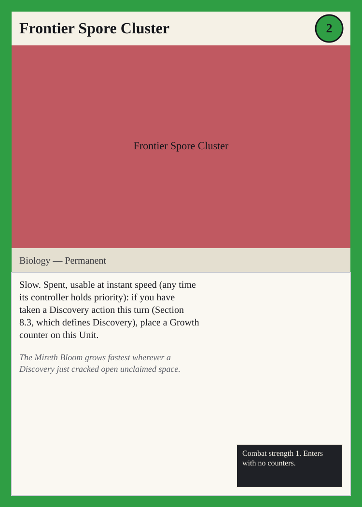
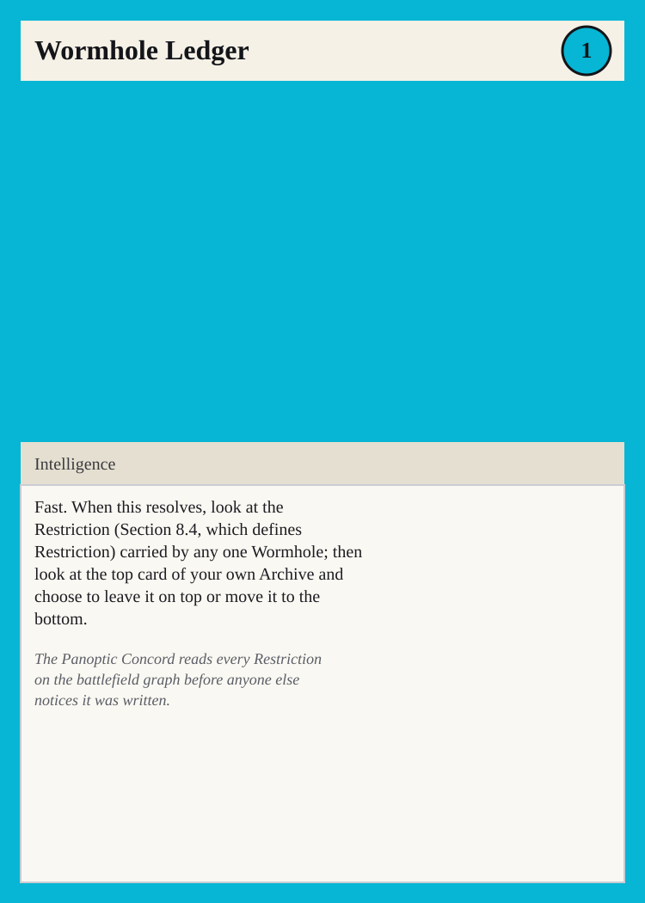
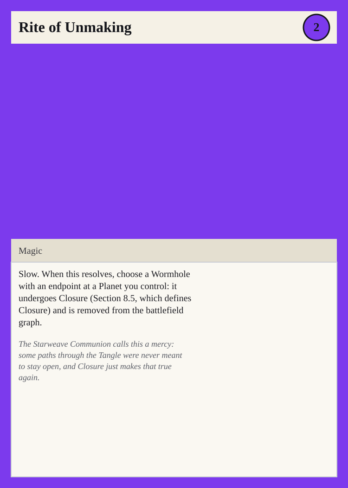
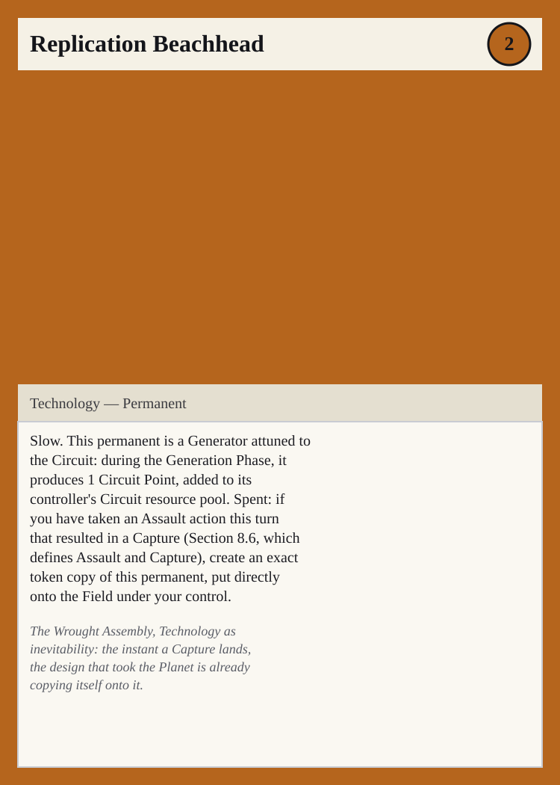

Frontier Set — Cards of the Battlefield Graph
Summary
This file contains 5 named cards, one per race, each mechanically tied to the battlefield graph defined in design/rules.md Section 8: the Cindral Reach (Materials, citing Blockade, Section 8.6), the Mireth Bloom (Biology, citing Discovery, Section 8.3), the Panoptic Concord (Intelligence, citing Restriction, Section 8.4), the Starweave Communion (Magic, citing Closure, Section 8.5), and the Wrought Assembly (Technology, citing Assault and Capture, Section 8.6). Every card follows the canonical template of design/rules.md Section 9.1.
The Cindral Reach
Bastion Reclamation Crew

Cost line: 2 Mass Type line: Materials — Permanent Rules text: Slow. Spent: place a Fortification counter on any Generator you control on a Planet currently under Blockade (Section 8.6, which defines Blockade).
The Cindral Reach, Materials as doctrine: even a Planet under Blockade still gets reinforced, not abandoned.
The Mireth Bloom
Frontier Spore Cluster

Cost line: 2 Bloom Type line: Biology — Permanent Rules text: Slow. Spent, usable at instant speed (any time its controller holds priority): if you have taken a Discovery action this turn (Section 8.3, which defines Discovery), place a Growth counter on this Unit. Stats/counters line: Combat strength 1. Enters with no counters.
The Mireth Bloom grows fastest wherever a Discovery just cracked open unclaimed space.
The Panoptic Concord
Wormhole Ledger

Cost line: 1 Signal Type line: Intelligence Rules text: Fast. When this resolves, look at the Restriction (Section 8.4, which defines Restriction) carried by any one Wormhole; then look at the top card of your own Archive and choose to leave it on top or move it to the bottom.
The Panoptic Concord reads every Restriction on the battlefield graph before anyone else notices it was written.
The Starweave Communion
Rite of Unmaking

Cost line: 2 Tangle Type line: Magic Rules text: Slow. When this resolves, choose a Wormhole with an endpoint at a Planet you control: it undergoes Closure (Section 8.5, which defines Closure) and is removed from the battlefield graph.
The Starweave Communion calls this a mercy: some paths through the Tangle were never meant to stay open, and Closure just makes that true again.
The Wrought Assembly
Replication Beachhead

Cost line: 2 Circuit Type line: Technology — Permanent Rules text: Slow. This permanent is a Generator attuned to the Circuit: during the Generation Phase, it produces 1 Circuit Point, added to its controller's Circuit resource pool. Spent: if you have taken an Assault action this turn that resulted in a Capture (Section 8.6, which defines Assault and Capture), create an exact token copy of this permanent, put directly onto the Field under your control.
The Wrought Assembly, Technology as inevitability: the instant a Capture lands, the design that took the Planet is already copying itself onto it.